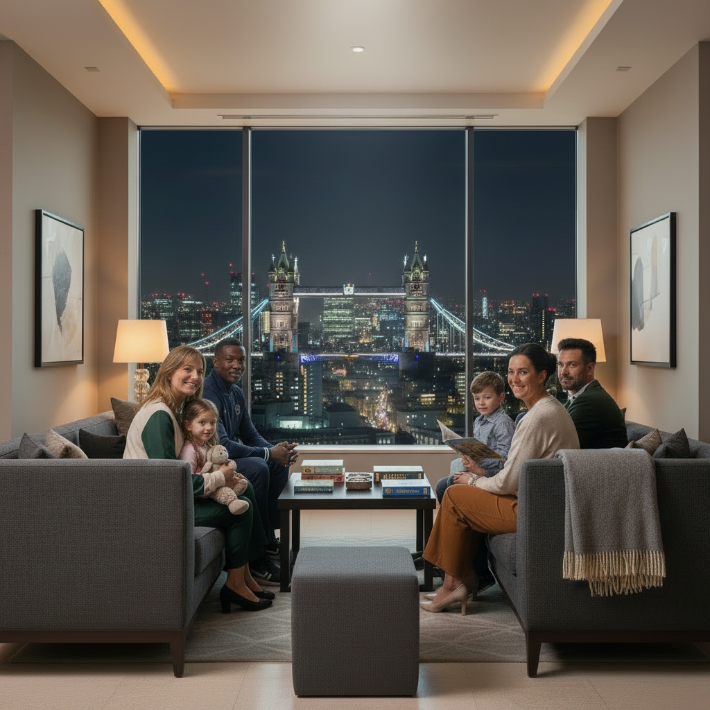

Audience
Adult runners, running clubs, international visitors and supporters who want organised travel for a marathon weekend.
About the agency
6 Majors Travel is a specialist concept agency built around the needs of runners, clubs and supporters attending the six World Marathon Majors.
Major marathon weekends are exciting but complex. Travellers need reliable accommodation, transport advice and clear information about race-week movement. Our purpose is to make those decisions easier.
The website presents a professional travel agency that offers destination information, package examples and a simple enquiry form for prospective customers.
We will provide you with the best support in this journey. we know what you need.

Adult runners, running clubs, international visitors and supporters who want organised travel for a marathon weekend.
Serious, calm and practical. The design avoids unnecessary decoration and keeps information easy to scan.
Pages use semantic HTML, readable colour contrast, image alt text and responsive layouts for different screen sizes.